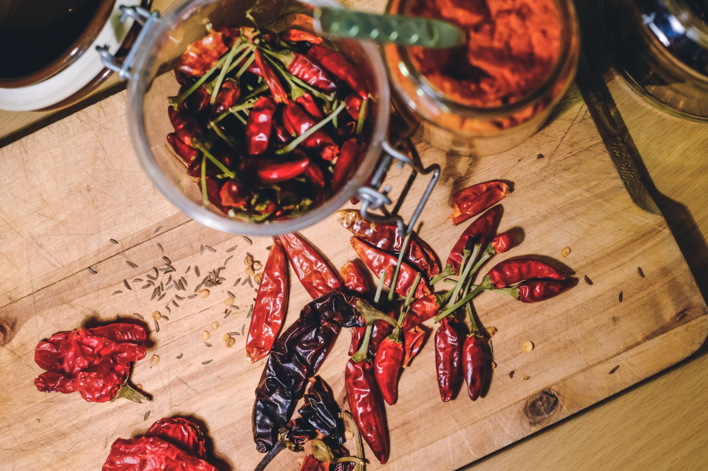

Restaurante · Pucura, camino a Coñaripe
La parada
de la vuelta
al lago
El auto lleno, el domingo, la vuelta al Calafquén. Alguien pregunta dónde parar a comer y nadie tiene el dato. Esta página es ese dato.
- nota en Google
- 4,7
- reseñas
- 131
- horario publicado
- ninguno
Dónde queda, de verdad
En la vuelta
al lago
Pucura está en el camino entre Coñaripe y Licán Ray. Casi nadie llega buscándolos: los ven al pasar, o no los ven. Cuatro datos escritos convierten «pasamos por el frente» en «paramos».
- De qué lado del camino
- falta Yendo hacia Coñaripe, ¿a la derecha o a la izquierda? Es la diferencia entre frenar y seguir de largo.
- Qué se ve desde el camino
- falta Un letrero, un techo, un color. La referencia visible es lo que hace que el copiloto diga «ahí es».
- Dónde se estaciona
- falta Con un auto lleno, si no se ve dónde parar, no se para.
- Días y horario
- falta El dato que más se busca y el que no está. Sobre todo fuera de temporada.
Lo que esta página no dice: cuántos kilómetros ni cuántos minutos hay desde Coñaripe o desde Licán Ray. No los tengo medidos, y un número inventado manda a alguien a buscar un local donde no está.

Lo que hay que decir por escrito
Cuánto pica, en una palabra
El merkén es lo que distingue una cocina del sur de una cocina cualquiera, y es también lo que hace que alguien no vuelva: nadie avisa cuánto pica. Escribir «suave», «medio» o «picante» al lado de cada plato cuesta una línea y evita el único reclamo que un restaurante de esta zona recibe de verdad. Lo mismo con el ahumado: hay quien lo busca y quien lo evita.
La pregunta del auto lleno
La mesa
larga
Llegar de a doce sin avisar es la situación más incómoda de todo el rubro: para el grupo, que se queda parado en la puerta, y para la cocina, que tiene que decir que no. Se arregla escribiendo cuatro cosas.
-
¿Reciben a doce sin aviso?
falta: sí / no / depende del día
Un «los domingos no, cualquier otro día sí» es una respuesta perfecta. Lo que no funciona es que haya que llamar para saberlo.
-
¿Desde cuántas personas conviene avisar?
falta: el número
Seis, ocho, diez. Con ese número escrito, el grupo avisa solo y la cocina deja de improvisar.
-
¿Con cuánta anticipación?
falta: el plazo
«El día antes» o «dos horas antes» cambian por completo lo que se puede preparar.
-
¿Hay un plato que salga para toda la mesa?
falta: cuál y para cuántos
Es lo que más ordena una mesa grande: uno solo pide, todos comen lo mismo y la cocina saca una vez. Si existe, es el plato que hay que poner primero en la carta.
Cuatro respuestas. Ningún competidor de la vuelta al lago las tiene escritas, y son exactamente las que decide un grupo mirando el teléfono dentro del auto.
La parada de la vuelta al lago
Domingo, seis de la tarde, y alguien pregunta dónde parar
Lo que sale de la cocina
La cocina
Un 4,7 con 131 reseñas se gana en la cocina, no en internet. Lo que falta es que el que todavía no entró sepa qué va a comer.
- Qué se cocina acá
- falta: dos o tres platos de la casa No hace falta la carta completa. Los tres que piden siempre, con nombre, alcanzan.
- Rango de precios
- falta «Un fondo va entre tanto y tanto». Un grupo de doce necesita ese número antes de bajarse del auto.
- Si hay algo sin carne
- falta En una mesa de doce siempre hay uno. Y ese uno decide por todos si no encuentra qué comer.
Avisar que vamos
Diga cuándo y cuántos son: el mensaje se arma solo.